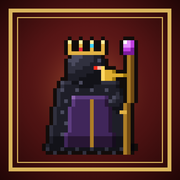

Política de Privacidade
Masmorra do Corvo Rei · em vigor desde 10 de novembro de 2026
Resumo
O jogo não coleta, não envia e não vende nenhum dado seu. Não tem cadastro, conta, anúncios, rastreamento nem estatísticas de uso. Tudo o que o jogo guarda fica só no seu aparelho.
1. O que o jogo guarda no seu aparelho
Para funcionar, o jogo guarda algumas informações apenas no armazenamento do seu próprio aparelho (navegador ou app). Nada disso sai do aparelho:
- Partida em andamento: herói, cartas, ouro, vida e andar atual, para você continuar depois.
- Opções: volume da música e dos efeitos, vibração, velocidade das falas, bateria, cenas.
- O que você já viu: cenas, tutorial e dicas, para não repetir.
- Nome do herói, se você escolher um. Ele só aparece dentro do jogo.
- Cópia do jogo e dos cenários, para abrir mais rápido e sem internet.
Você pode apagar a qualquer momento: a partida em Opções → Abandonar partida; e todo o resto apagando os dados do site nas configurações do navegador, ou removendo o app.
2. O que o jogo não faz
- Não pede nome real, e-mail, telefone, localização, fotos, contatos ou microfone.
- Não usa anúncios nem ferramentas de rastreamento ou de estatística.
- Não tem compras dentro do jogo nem chat com outras pessoas.
- Não compartilha nada com outras empresas.
3. Internet e hospedagem
A versão para navegador é hospedada no GitHub Pages. Ao abrir o jogo, o seu aparelho baixa os arquivos do jogo de lá, e o GitHub pode registrar dados técnicos de acesso (como o endereço IP) para manter o serviço funcionando, conforme a política de privacidade do GitHub. O jogo em si não envia nenhuma informação sua para lugar nenhum.
4. Crianças
Como o jogo não coleta dado nenhum, ele também não coleta dados de crianças. É seguro para jogar sem cadastro.
5. Mudanças nesta política
Se o jogo um dia passar a usar algum dado (por exemplo, salvar na nuvem), esta página será atualizada antes da mudança, com a data nova no topo.
6. Contato
Dúvidas sobre privacidade: abra uma mensagem em github.com/contatojampro5-dot/masmorra-do-corvo-rei/issues.
Privacy Policy (English summary)
Masmorra do Corvo Rei does not collect, transmit or sell any personal data. There are no accounts, ads, tracking or analytics. Game progress, settings and the hero name you choose are stored only on your own device and can be deleted at any time. The web version is hosted on GitHub Pages, which may log technical access data under GitHub's own privacy policy. Contact: the issues page linked above.